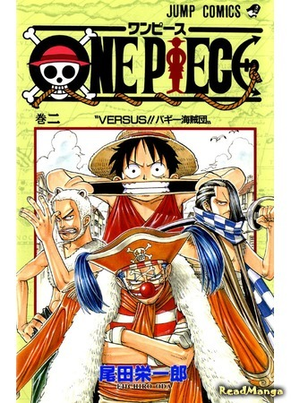

|  |
Описание:Последние слова, произнесённые Королем Пиратов Гол Д. Роджером перед казнью, вдохновили многих выйти в море: «Мои сокровища? Я завещаю их тому, кто сможет их найти. Ищите! Я все оставил в одном месте!». Лишённые сна и покоя люди ринулись на Гранд Лайн, самое опасное место в мире. Так началась великая эра пиратов... Но с каждым годом романтиков становилось все меньше, их постепенно вытесняли прагматичные пираты-разбойники, которым награбленное добро было куда ближе, чем какие-то «никчёмные мечты». Но вот, одним прекрасным днем, семнадцатилетний Монки Д. Луффи исполнил заветную мечту детства — отправился в море. Его цель — ни много, ни мало стать новым Королём Пиратов. За достаточно короткий срок юному капитану удаётся собрать команду, состоящую из не менее амбициозных искателей приключений. И пусть ими движут совершенно разные устремления, главное, этим ребятам важны не столько деньги и слава, сколько куда более ценное – принципы и верность друзьям. И ещё – служение Мечте. Что же, пока по Гранд Лайн плавают такие люди, Великая Эра Пиратов всегда будет с нами! |
|